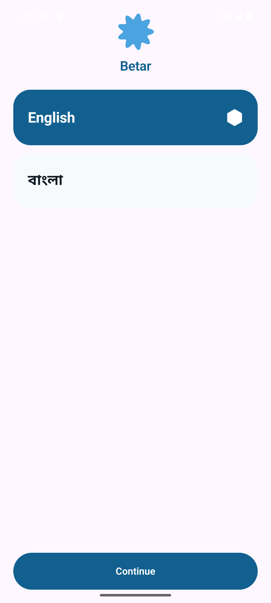
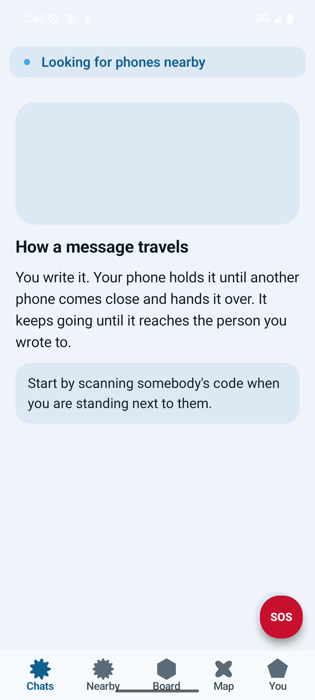
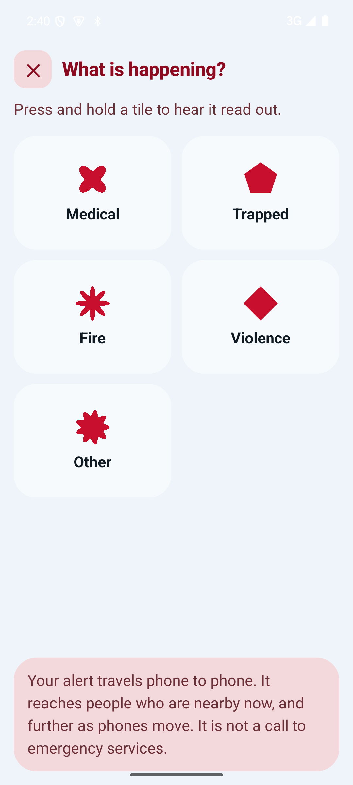

Betar. Connect with no network.
Betar is communication and safety infrastructure for places the network does not reach: remote areas, and any time towers go down or power fails. Phones carry messages to each other directly, hop by hop, until one reaches the person it was meant for.
Where it is meant to be used
Remote areas
Hill country, islands, forest and river regions, high valleys: anywhere coverage is weak, patchy or absent.
Cyclones, floods, earthquakes
Exactly when towers go down and power fails, and exactly when people need to reach each other most.
Any dead zone
Whenever the network is down or unavailable, for whatever reason, for as long as it lasts.
What it carries
Alongside messaging, Betar carries emergency alerts, a community notice board, a help and supplies board, and offline maps. Calling it a chat app would shrink it to its smallest part, though messaging is the tab it opens to every time, since ordinary daily use is what keeps it already installed and already understood before a storm arrives.
Messaging
Direct one to one and private group conversations, delivered hop by hop between nearby phones.
Emergency alerts
A five category picker, location sharing off by default, and a deliberate slide to send gesture.
Notice and help board
Community notices and a have or need board for supplies, with an expiry on every entry.
Offline map
A local map with community pins, no tile server required.
Honest about delivery
Messages travel when phones happen to meet, which can take minutes or hours. Betar never shows a checkmark that implies delivery is guaranteed.
| State | Means |
|---|---|
| Waiting | Still on your phone, nobody nearby yet |
| Travelling | Handed to one phone |
| Spreading | Handed to several phones |
| Delivered | The recipient confirmed it |
Real screens, not mockups
Captured from an actual on-device run. English shown here; Bengali ships as an equal default language, not a translation afterthought.

Onboarding
Language picker, no account, no login, install to first message in under a minute.

Chats
The mesh ribbon, an empty state that teaches instead of apologising, and the SOS button that never hides.

Emergency
Five categories, each its own shape and pictogram, readable without literacy or colour.
Frequently asked
What is Betar?
Betar is communication and safety infrastructure for places the network does not reach. It carries messaging, emergency alerts, a community notice board, a help and supplies board, and offline maps, all without a SIM card, internet connection, router or cell tower.
Does Betar need an internet connection?
No. Betar requests no internet permission at all. Phones pass messages directly to each other over Bluetooth and Wi-Fi Direct, hop by hop, until a message reaches the person it was meant for.
Does Betar require an account, phone number or login?
No. There is no signup, no account, no email, no phone number and no login. A device identity is generated quietly on first launch.
Is Betar open source?
Yes. Betar is built on Project Mesh, an open protocol and Rust core released under the AGPL-3.0 license. Anyone may read, build and check the source.
How far can a message travel without internet?
As far as phones happen to carry it. A message hops from phone to phone across Bluetooth and Wi-Fi Direct links, so its reach depends on how many devices are nearby and moving, not on any fixed network coverage.
Betar has not had an independent security review yet, and is not a replacement for emergency services where they exist. Read safety and limits before relying on it.